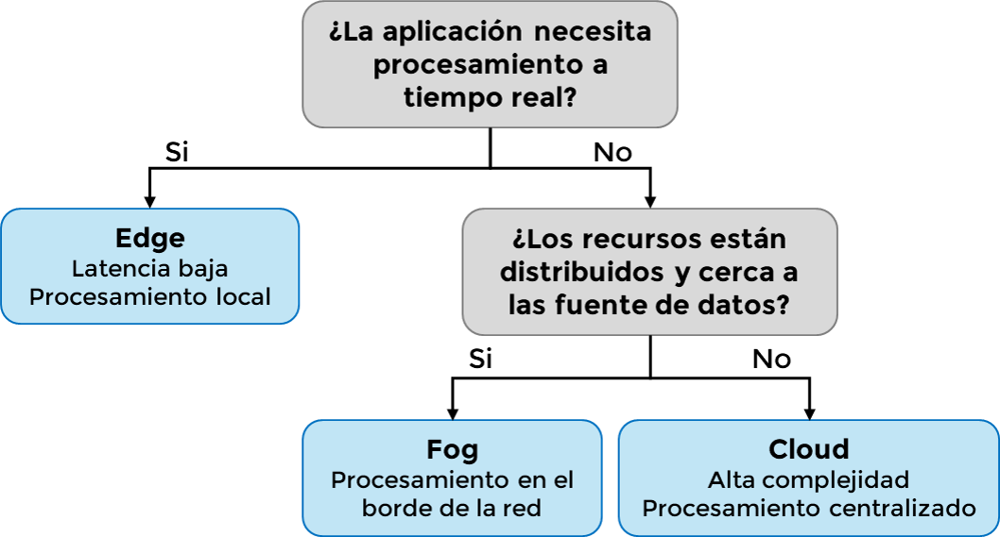

Módulo 2.4. Plataformas de Procesamiento y Análisis de Datos:
A medida que los sistemas IoT crecen en complejidad y volumen de datos, se hace imprescindible elegir con criterio el modelo de procesamiento adecuado. Existen tres modelos principales: procesamiento en la nube (cloud), en el borde (edge) y en la niebla (fog). Cada uno responde a diferentes necesidades según el tipo de aplicación, el tiempo de respuesta requerido, la arquitectura de red y la capacidad de cómputo disponible.
Video 4:
Diferencias entre fog computing, edge computing y cloud computing
Ver desde 00:30
Procesamiento en la nube (Cloud Computing)
Este modelo centraliza el procesamiento de datos en servidores remotos de gran capacidad. Es ideal cuando se necesita realizar análisis complejos, almacenamiento masivo o aplicaciones que no exigen respuesta inmediata. Plataformas como AWS IoT, Microsoft Azure IoT Hub, Google Cloud IoT o ThingWorx son ejemplos típicos.
Ventajas principales:
- Gran capacidad de cómputo y almacenamiento.
- Acceso a herramientas avanzadas de analítica e inteligencia artificial.
- Escalabilidad global.
Desventajas
- Mayor latencia.
- Dependencia de conexión a Internet.
- Posibles preocupaciones de privacidad y seguridad de datos.
Procesamiento en el borde (Edge Computing)
En este modelo, el análisis de los datos ocurre cerca del dispositivo que los genera, usualmente en gateways o microcontroladores avanzados como el ESP32.
Ventajas principales
- Baja latencia, ideal para respuestas en tiempo real.
- Menor carga en la red y en la nube.
- Mejora la privacidad, ya que los datos pueden no salir del entorno local.
Desventajas:
- Limitaciones en capacidad de procesamiento.
- Mayor complejidad de mantenimiento y actualizaciones.
Fog Computing: Un modelo intermedio
Ubicado entre el edge y la nube, el modelo fog permite distribuir parte del procesamiento en nodos intermedios, como routers inteligentes o microservidores. Es útil en escenarios que requieren procesamiento distribuido con cierta capacidad de coordinación.
Ventajas principales:
- Equilibrio entre latencia, capacidad y escalabilidad.
- Aumenta la resiliencia y reduce congestión en la nube.
Desventajas:
- Requiere infraestructura adicional.
- Aún en evolución y con menos estandarización que cloud o edge.
Ejemplos de plataformas asociadas
- Cloud: AWS IoT Core, Microsoft Azure IoT Hub, Google Cloud IoT, IBM Watson IoT.
- Fog: Cisco IOx, Dell Edge Gateways, OpenFog.
- Edge: Raspberry Pi, NVIDIA Jetson, ESP32 local con MicroPython o Node-RED embebido.
Entre las plataformas más representativas están:
- AWS IoT: Plataforma escalable basada en la nube, integra servicios de analítica, machine learning y visualización.
- Microsoft Azure IoT Hub: Comunicación segura entre millones de dispositivos, integración con servicios de datos.
- Google Cloud IoT Core: Administración eficiente de dispositivos, almacenamiento y analítica con BigQuery.
- ThingWorx: Solución industrial robusta que permite crear aplicaciones IoT rápidamente.
- Node-RED (local): Herramienta visual para flujos de datos que puede correr en bordes como Raspberry Pi o en gateways industriales.
| Plataforma | Tipo de procesamiento | Lenguajes/Soporte | Ventajas destacadas |
|---|---|---|---|
| AWS IoT Core | Cloud + Edge (Greengrass) | Python, Node.js, Java | Alta escalabilidad, integración con servicios AWS |
| Microsoft Azure IoT Hub | Cloud + Edge | C#, Python, JavaScript | Seguridad avanzada, integración con Power BI |
| Google Cloud IoT | Cloud | Python, Go, Java | Integración con BigQuery y AI/ML |
| ThingWorx (PTC) | Cloud + On-premise | Java, REST API | Enfoque industrial, dashboards intuitivos |
| Node-RED (local) | Edge / Fog (on-device) | JavaScript, Python | Fácil de usar, sin necesidad de nube |
Conclusiones
Comprender los modelos de procesamiento de datos en IoT permite tomar decisiones acertadas para cada tipo de aplicación. Mientras que el cloud computing aporta poder analítico masivo, el edge computing ofrece inmediatez y eficiencia. El fog computing, por su parte, se posiciona como una solución intermedia ideal para entornos distribuidos que requieren escalabilidad y latencia reducida.
| Modelo | Ubicación del procesamiento | Latencia | Costos operativos | Escalabilidad |
|---|---|---|---|---|
| Cloud | Nube (servidores remotos) | Alta | Medio-Alto | Alta |
| Edge | Dispositivo o gateway local | Muy baja | Bajo | Limitada |
| Fog | Dispositivo intermedio | Baja | Medio | Media |

Figura 11: Flujo de decisión por escenario de aplicación. Elaboración propia
Referencias
- A. Čolaković and M. Hadžialić, "Internet of Things (IoT): A review of enabling technologies, challenges, and open research issues," Computer Networks, vol. 144, pp. 17-39, 2018.
- R. Mehta, J. Sahni, and K. Khanna, "Internet of Things: Vision, Applications and Challenges," Procedia Computer Science, vol. 132, pp. 1263-1269, 2018.
- A. Al-Fuqaha, M. Guizani, M. Mohammadi, M. Aledhari, and M. Ayyash, "Internet of Things: A Survey on Enabling Technologies, Protocols and Applications," IEEE Communications Surveys & Tutorials, vol. 17, no. 4, pp. 2347-2376, 2015.